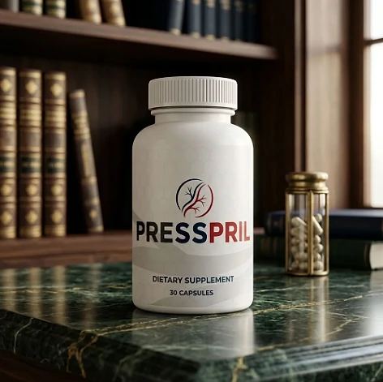
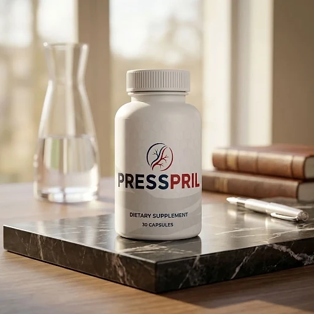
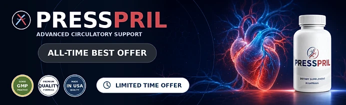

What Is PressPril And How Does It Work?
PressPril is a dietary supplement in capsule form designed to support healthy blood pressure levels already within the normal range, circulation, and cardiovascular wellness for adults who want to look after their circulation, daily energy, and heart health as the years go by through a natural, dependable approach — without complicated routines or temporary quick fixes.
It utilizes a simple daily capsule that combines Niacin with five amino acid compounds — L-Arginine, L-Arginine AKG, L-Citrulline HCl, L-Citrulline Malate, and Beta Alanine — to support the body's natural production of nitric oxide and healthy blood flow, helping the body maintain its natural balance throughout the day.
The ingredients in PressPril are amino acid compounds and a B vitamin that, according to the official website, may help support the body's natural ability to produce nitric oxide and sustain healthy circulation, particularly for adults who prefer one simple capsule a day over multiple products or complicated plans.
Rather than acting as a short-lived artificial fix, PressPril focuses on a nutritional approach to vascular health, working gradually alongside daily routines to help maintain smooth circulation, steady energy, and long-term wellness.
With consistent daily use, the formula is intended to provide continuous nutritional support for circulation, steady daily energy, and a gradual sense of well-being, especially when combined with a balanced diet, good sleep, and regular exercise.
From a practical standpoint, PressPril is a daily cardiovascular support capsule designed to support wellness from within — helping you stay active, energized, and in control of your health.
Manufactured in the USA with globally sourced ingredients, according to the product label, and produced in an FDA-registered, GMP-certified facility, according to the official website, PressPril is designed for regular daily use, focusing on safety, purity, and quality for those seeking a natural, non-prescription way to support cardiovascular wellness.
PressPril Ingredients
Every capsule of PressPril contains seven active ingredients listed on the Supplement Facts panel, each with its amount disclosed and chosen to support nitric oxide production, circulation, and vascular health as part of a consistent daily routine:
L-Arginine (200 mg, base): An amino acid the body uses as a direct precursor to nitric oxide, the molecule that helps blood vessels relax.
L-Arginine AKG (200 mg, 2:1 extract): A second form of arginine that complements the nitric oxide support of the formula.
L-Citrulline HCl (100 mg): An amino acid the body converts into arginine, giving nitric oxide production a second, longer-lasting source.
L-Citrulline Malate (100 mg): A form of citrulline included to support healthy blood flow and natural energy production.
Beta Alanine (40 mg): An amino acid that rounds out the blend.
Niacin (7.5 mg NE): Vitamin B3, providing 47% of the Daily Value, which contributes to normal energy metabolism.
Calcium (18 mg, as Calcium Carbonate): A mineral present in a small amount, 1.5% of the Daily Value.
Together, these ingredients work synergistically to support healthy blood flow, vascular comfort, and cardiovascular wellness from within. The other ingredients on the label are hypromellose (vegetable capsule), vegetable stearate, and silicon dioxide, so the capsule shell is plant-based.
PressPril is designed for daily use, offering a natural, non-prescription approach to supporting circulation, without artificial stimulants or complicated routines.
PressPril Side Effects
PressPril is generally considered well tolerated and is designed for adults of different ages and lifestyles who are looking for a safe, natural, and balanced approach to cardiovascular wellness, especially those who prefer an easy one-capsule daily routine to support circulation, energy, and well-being without resorting to risky solutions with severe side effects.
All ingredients used in PressPril are described on the official website as researched for safety and recognized nutritional roles, and PressPril is made in the USA in an FDA-registered, GMP-certified facility, according to the same source, reinforcing consistency, safety, and reliability.
With no widespread reports of serious side effects, PressPril is generally considered a well-tolerated option. The official website carries its own safety notice: because L-Arginine, L-Citrulline, and Niacin act on the body's natural vasodilation pathways, anyone who takes blood pressure medication, blood thinners, or nitrates should show the bottle to their doctor first, and the site states that PressPril is not a substitute for prescribed medication. It is not intended to diagnose, treat, cure, or prevent any disease, and individual results may vary.
According to the label, pregnant or nursing mothers, children under the age of 18, and individuals with a known medical condition should consult a physician before using PressPril. The label also says not to exceed the recommended dose, ensuring it fits safely within your personal wellness plan.
PressPril Dosage
The recommended PressPril dosage is one capsule a day with an 8 oz. glass of water, and it is designed to fit easily into a daily routine, making consistency simple and convenient. Formulated as an easy daily vegetable capsule, it requires no powders to mix, no drinks to prepare, and nothing to measure.
The recommended approach, as printed on the label, is to take one (1) PressPril capsule daily. For best results, the label suggests taking PressPril 20 to 30 minutes before a meal with 8 oz. of water, or as directed by your healthcare professional, which allows the ingredients to work consistently.
For best results, consistency is key. Each bottle contains 30 capsules, a one-month supply, and because nutritional support for circulation builds gradually, the official website notes that many people allow 60 to 90 days of consistent daily use.
There is no need for complex schedules or multi-step routines. One simple daily capsule is designed to build lasting support gradually alongside a balanced diet, good sleep, and an active lifestyle. The label also advises storing the bottle in a cool, dry place away from heat and light, and not using it if the safety seal is damaged or missing.
As with any dietary supplement, it's important not to exceed the recommended dose and to check the label on your bottle. PressPril works best when used regularly, combined with proper hydration, balanced nutrition, and healthy daily habits.
PressPril – Refund Policy
You can order PressPril with confidence, knowing that every purchase is protected by a 60-day money-back guarantee. This allows you to try the formula and decide if it delivers the support you expect.
According to the refund policy on the official website, if you are not completely satisfied for any reason, you may request a full refund within 60 days of your original order date. Shipping charges, where applicable, are not refunded, and the customer pays the return shipping unless the product arrived damaged or incorrect.
How the refund process works: If you decide PressPril is not right for you, email customer support within 60 days with your order number and the email address used at checkout. The team replies with the return instructions and the return address, and you then send back any remaining or unopened bottles as instructed.
Customer Support Contact Information: support@healthyconsumer.us, as listed on the official website. The support team is available Monday through Friday, 9 AM to 5 PM EST.
Refund Processing Time: Once your request is approved, the refund is issued to the original payment method, and it may take 5 to 10 business days to appear, depending on your bank or card issuer.
This refund policy is designed to give customers a clear and transparent experience when trying PressPril. If an order arrives damaged or incorrect, the policy asks customers to get in touch within 30 days of delivery.
PressPril – Where To Buy
PressPril is sold through its official website, so if you decide to try it, it's important to be careful about where you purchase it. The official website is the only sales channel the manufacturer lists, and it does not point to marketplaces such as Amazon, eBay, or Walmart.
Listings on third-party platforms may look similar but cannot be verified as authentic, raising concerns about safety, quality, and ingredient freshness. Products purchased outside the official source may not be covered by the 60-day guarantee.
For this reason, it makes sense to purchase PressPril only through the official website. Buying directly from the official source ensures you receive the authentic original product, made in the USA, with access to customer support and the full guarantee. According to the official website, the product is sold exclusively there, and every order is a one-time purchase, with no subscriptions, automatic re-bills, or hidden charges.
To avoid counterfeit batches and ensure maximum quality, always verify that you are ordering from the official PressPril website before completing your purchase.
To ensure you’re getting the authentic product, most users choose to visit the official website.
Is PressPril A Scam?
Based on what the official website and the product label disclose, PressPril does not appear to be a scam. It is a real capsule supplement, sold through an established retailer, and formulated to support healthy blood pressure levels, circulation, and cardiovascular wellness as part of a consistent routine.
The ingredients used in PressPril — L-Arginine, L-Arginine AKG, L-Citrulline HCl, L-Citrulline Malate, Beta Alanine, and Niacin — are well known in the wellness field, and the label publishes a full Supplement Facts panel with the amount of each one for transparency.
In addition to its simple formula, PressPril is manufactured in the USA with globally sourced ingredients, according to the product label, and the official website states openly that it is not a substitute for prescribed medication, with a focus on safety, purity, and consistency.
The formula offers daily nutritional support for nitric oxide and circulation and an easy daily habit, making PressPril a practical option for those seeking natural support for circulation. Results vary from person to person, and no supplement replaces blood pressure monitoring, medical care, or prescribed treatment.
PressPril is backed by a 60-day money-back guarantee, and orders are one-time purchases with no subscriptions or hidden charges. The refund steps, the return address, and the support hours are published on the official website, which underscores the manufacturer's transparency with customers.
If you're looking for a simple daily capsule to support circulation, energy, and well-being without complicated routines, PressPril is worth considering — especially when purchased directly from the official website.
For those who want to verify product details or check current availability, the official PressPril website remains the safest option.

Check Availability On Official Website
